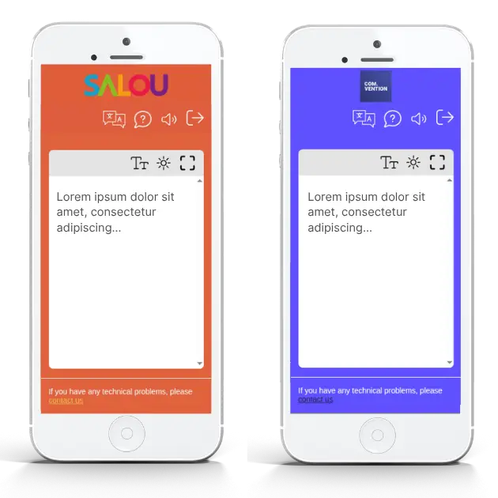

Rosa Sala
How Is Nubart TRANSLATE Different From Other AI Interpretation Providers?

AI-powered live interpretation platforms often look similar at first glance: real-time translation, multiple languages, browser access, GDPR compliance. The real differences emerge in how they work during a live event.
Nubart TRANSLATE is a browser-based AI interpretation platform for in-person and hybrid events. This article explains what distinguishes it from most other providers, including speaker setup, pricing, listener access, data processing, and deployment. These are the practical details that event organizers, IT teams, and compliance reviewers typically evaluate before choosing a platform.
At a Glance
| Feature | Nubart TRANSLATE |
|---|---|
| Scales price with audience size? | No — same price whether 20 or 2,000 listeners |
| Scales price with number of languages? | No — same price whether 2 or 35 languages |
| Requires an app download? | No — works directly in browser |
| QR code reusable across future events? | Yes |
| One code covers multiple simultaneous rooms? | Yes |
| Device-bound access option for confidential events? | Yes |
| EU-based processing (most supported languages)? | Yes |
| Self-serve free trial? | Yes — 30 minutes, no sales call |
| Custom branding (logo & colors) included at no extra cost? | Yes — self-serve, no add-on |
| Builds terminology glossary automatically from your documents? | Yes — no manual list-building required |
Try It Yourself Before Reading Further
Nubart TRANSLATE offers a free 30-minute trial under real conditions, no sales call required, and those 30 minutes can be split across as many sessions as you like, over as many days as needed. The only things missing from the trial are your own branding and layout, and the terminology preparation we normally do from your event materials beforehand. Everything else works exactly as it would on the day of your event.
1. Pricing Doesn't Depend on Audience Size
Nubart TRANSLATE charges based on active translation stream time, not on how many people are listening. The pricing calculator on our website lets customers check the expected cost for their own event before booking, without needing a custom quote.
2. Confidential Events Stay Confidential
As an optional feature for board meetings, investor briefings, and other confidential sessions, Nubart TRANSLATE can bind listener access to the first device that activates a QR code, so a forwarded link won't open on a second device, with no personal registration required. Many competing systems instead rely on a shared code or passcode that behaves like any other forwardable link. We cover how this works in more detail in a separate article.
3. EU-Based by Default
Nubart TRANSLATE is built and operated by EU-headquartered companies, and the core processing pipeline, covering speech recognition, translation, and voice synthesis, runs on EU-based infrastructure by default for the large majority of supported languages. Customers also choose their own data retention policy for each event: immediate deletion, 30 days, or indefinite with contractually limited use. Being headquartered in Europe isn't the same as processing data within the EU, which is the more concrete question for teams with strict procurement or compliance requirements.
4. One QR Code for Every Event
The listener QR code is tied to the customer's account rather than generated fresh for each event. The same code works again for the next event, year after year, without reprinting or reissuing anything — a detail that matters the moment a customer runs the same event on a recurring basis. Many platforms instead generate a new, event-specific code every time.
5. Built to Fit Any Event Structure
Nubart TRANSLATE's QR code works as a container that adapts to the shape of the event, rather than a fixed session with one predefined setup. For a multi-room conference, Nubart sets up a button inside that same container for each room, named however suits the event. For speakers, the setup scales to whatever's actually needed: a single room with one shared language can run on a single speaker account, and a single room with several speakers switching between languages can use either one shared account with the language changed as needed, by the speaker or an AV technician, or a separate account per speaker. Nubart's team is happy to advise on which setup fits best, so the flexibility doesn't have to be figured out alone. Many competing platforms instead tie one session to one QR code, often built around a single spoken language at a time, which leaves less room to adapt once the event is underway.

6. Your Logo and Colors, Included by Default
Branding the listener interface with the event's own logo and colors is included at no extra cost with Nubart TRANSLATE, as a standard, self-serve setting rather than a paid upgrade. Among the providers we reviewed, this level of included, self-serve branding is uncommon: where competitors offer interface branding at all, it typically comes as a paid add-on delivered through a professional-services team, rather than something a customer configures directly.

7. No Glossary to Build, Just Your Own Documents
Nubart TRANSLATE builds its event-specific vocabulary directly from documents the customer already has, such as a presentation, script, or PDF, uploaded to a password-protected customer account. The system extracts key terminology, brand names, and technical terms automatically, with no list-building required; a short spreadsheet is only needed for terms that must always translate a specific way or should never be translated at all. Many competing platforms instead require the customer to manually compile and enter a term list into a glossary tool themselves.
Translation quality is only one part of choosing an AI interpretation platform. Pricing, listener access, speaker workflows, and where data is processed often have just as much impact on how smoothly an event actually runs. Nubart TRANSLATE was designed around those operational details, not just around translation accuracy.
Have a specific setup in mind? Contact us and we'll help you figure out the right configuration for your event.